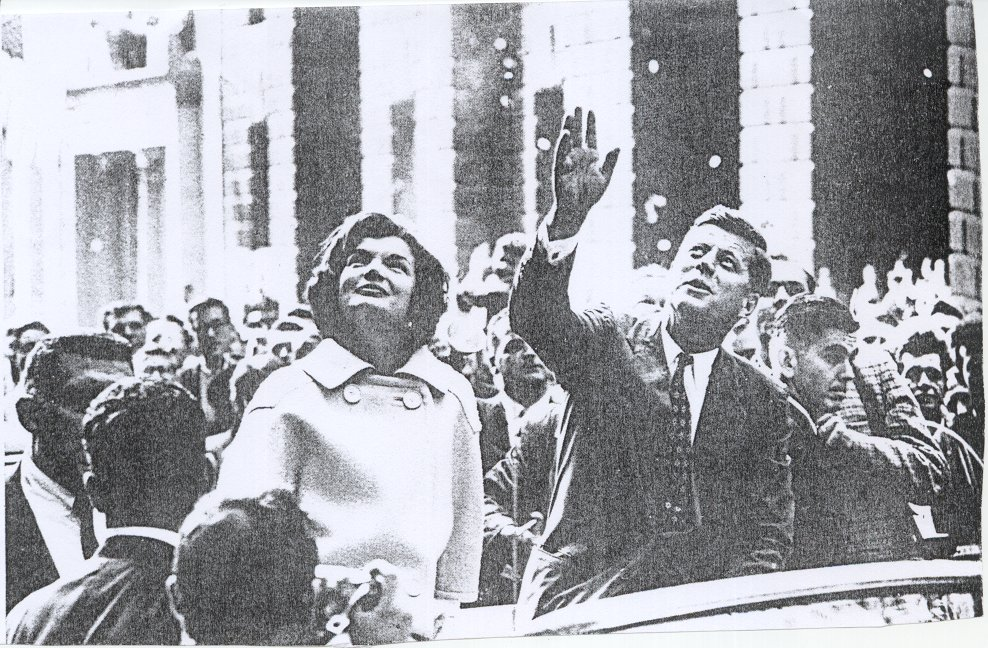

His Administration
Kennedy’s big problems as president were the cold war with Communism, the resistance of Southerners in his own party to the demands of the Negroes for full civil rights equality, and unemployment.
Berlin.
The Communists had chosen to make Berlin the chief battleground of the Cold War. As if to test Kennedy’s courage, they intensified the pressures on West Berlin. Kennedy’s response was to alert the nation and strengthen its military position soon the Soviet threat subsided in Berlin.
Cuba.
In Cuba, Fidel Castro had turned a peoples revolt into a Communist Revolution. Anti – Castro Cubans in the U.S organized. With the United States aid they launched an invasion of their Country in April 1961. President Kennedy accepted responsibility for the results. The Cuba issue became far more serious in 1962. Photographs revealed Soviet missiles in Cuba the president insisted on their withdrawal and surrounded the island with ships and mobilized land and air forces. The crisis passed when Soviet Premier Khrushchev agreed to withdraw missiles and soldiers.

President Kennedy salutes the crowd